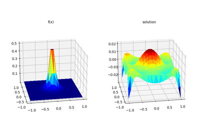
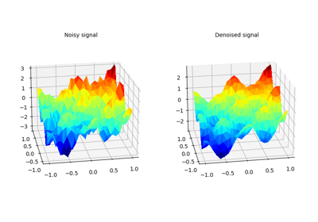
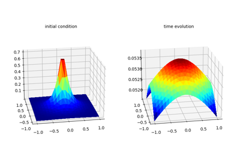
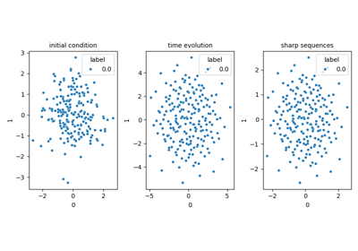
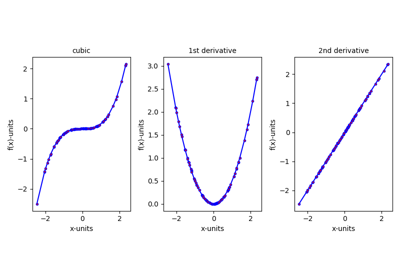

Chapter 7: Application to partial differential equations
This gallery contains examples and tutorials for Chapter 3. The examples demonstrate how to use the CodPy library for various machine learning and regression tasks.
Each example includes code and outputs, such as plots or results, to help you understand how the library works.
Below are the examples for this chapter:

7.01 Inverse Laplace Operator

7.02 Denoising

7.03 Heat Equation

7.04 Lagrange Heat Equation


7.06 Automatic Differentiation
7.06 Automatic Differentiation